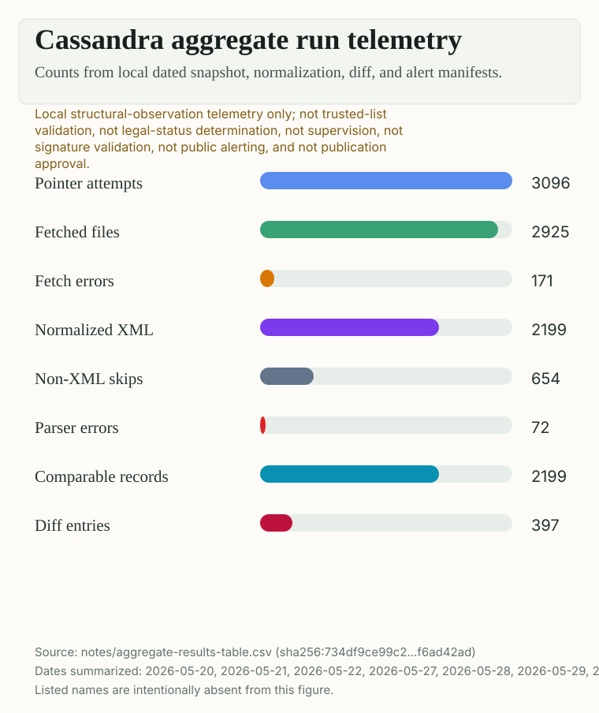
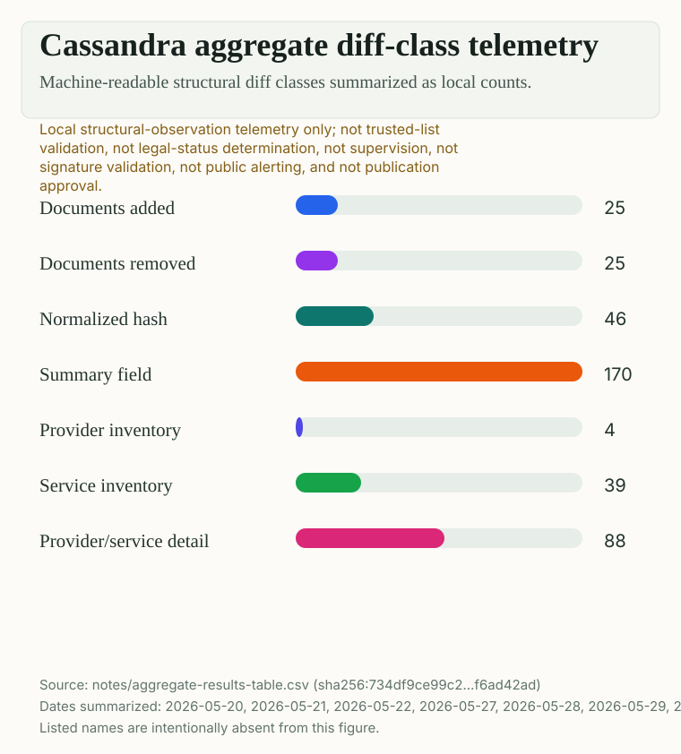

What Cassandra observes
Cassandra collects public list-derived artifacts, normalizes them into comparable local records, and reports structural changes such as hash changes, service inventory shifts, or provider-service detail changes.
What EATF proves
EATF receipts bind the evidence package, payload, and declared hashes. They prove the observation package is intact, not that a provider is compliant or that a list has legal effect.
Why it matters
Governance systems often explain authority. Evidence systems explain what was seen, when it was seen, and exactly which bytes later readers can re-check.
Working lemma
Evidence is useful when it is bounded.
If E(t) = {S(t), D(t), R(t)} is a dated snapshot, diff, and receipt, Cassandra asks whether the receipt still binds the package bytes. It does not ask whether the public authority, court, auditor, or relying party should agree with the meaning of the change.
Public source
Fetched
Comparable view
Normalized
Change signal
Diffed
Evidence boundary
Packaged
Integrity check
Receipted
For public readers
Plain-language reading guide
- Trusted list
- A public trust infrastructure artifact. Cassandra treats it as a source to observe, not as a verdict to issue.
- Structural diff
- A machine-readable description of what changed between saved observations.
- EATF receipt
- A receipt that lets someone verify package integrity and declared hashes later.
- Claim boundary
- The line between evidence integrity and legal, supervisory, or compliance interpretation.
For scholars
Method and scope
- Loading claim boundary...
Run history
Observation timeline
| Date | Fetched | Normalized | Records | Diffs | Event | EATF |
|---|
Diff classes
What changed most often
Figures
Aggregate telemetry


Latest evidence package